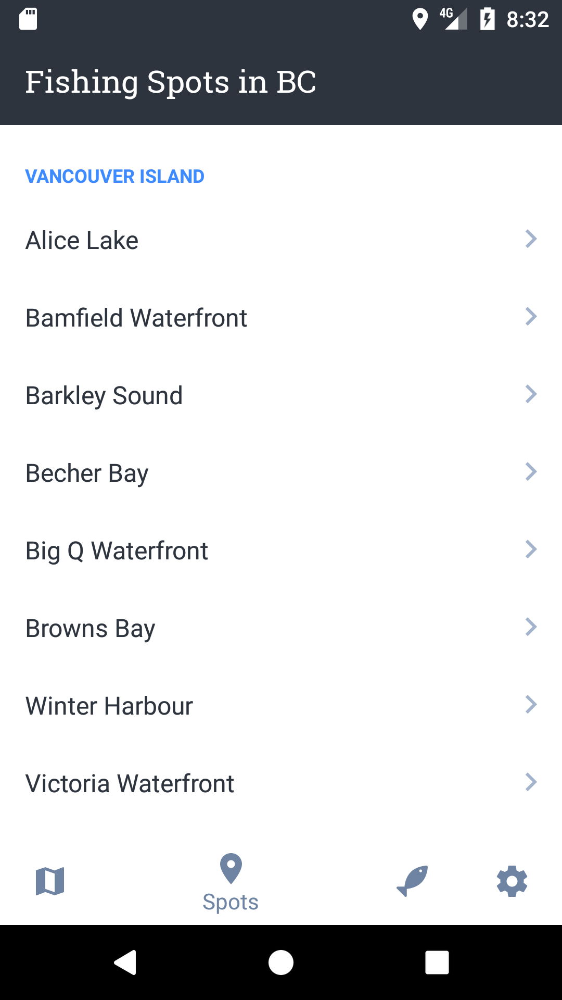
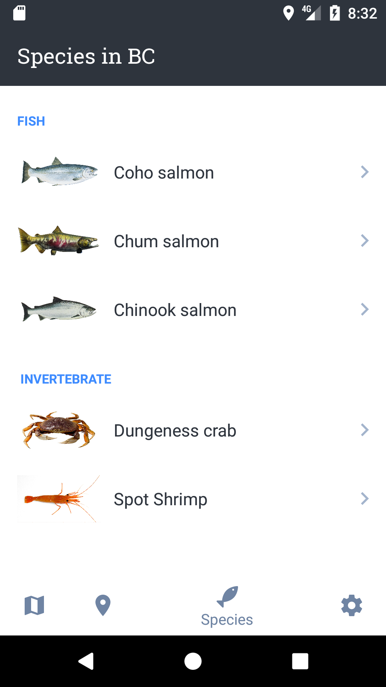
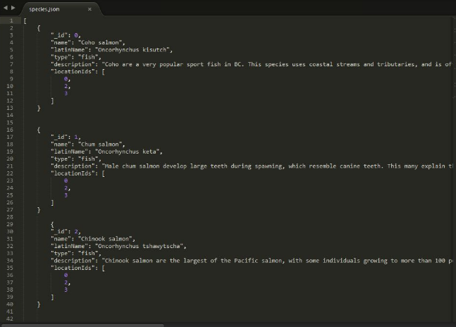

I want to use "Times New Roman" as main font for my portfolio.
.section nav a, #button, #interactive_elements, h1, #numbered-list, #bulleted-list, h2, h3,p,img
<a href="https://www.google.ca/">Home</a>
.row
.col-1, .col-2, .col-3,. col-4,. col-6, .col-12
<div class="col-1"></div><div class="col-2"></div><div class="col-3"></div><div class="col-4"></div>
My name is Shuangsheng Miao, a fourth-year international student in the SIAT program. I am passionate about mobile apps development, website design and game design; those are the reasons why I chose SIAT in the first place. Before I chose this major, I thought I could easily design some popular artwork for users. After I got started in my studies I realized that my ideas were wrong. I need to do a lot of work before starting to design a project such as analysis, tasks and evaluation. My goal is to design a good strategy game that can work with smart phone.
In this specific work, I was asked to add 3 activities, including implicit intent and explicit intent, to build a fishing app which can reduce the time and effort it takes for local fisherman to access vital information so they may have peace of mind while fishing. During the primary stage, I formulated a question about how to save users’ time if they use my app to plan their fishing trips. I checked a lot of information and built a primary vision for my app.  The vision of my app is my original idea. I listed all the major fishing spots around Vancouver in order to show the names of the different fishing areas in this activity.I also found some people to help me to task this app and asked them the assess the results. Based on this information, I knew I make some mistakes in the primary working because I did not think more about users’ cognitive processes. For instance, many users plan to go fishing; however they know nothing about the different fishing spots and they cannot choose any spot for fishing in this activity. I analyzed these mistakes and designed a new vision for my app. This vision is better than the original vision because users will be able to choose the fish they are interested in catching, which is easier than choosing a fishing spot by name alone, without any additional information about the possible catch. This vision for my app start page shows how my design re-focused.  After a few tries, I finished building the design concepts. Next, I needed to think about the technique concepts for my app. I added implicit intent to open a regulation website from an activity and explicit intent to let users open other activities. I used SQlite database for Storing content data for offline viewing because it is relatively easy to create and delete data from the database. This is an example of a SQlite database for one activity.  I thought the biggest challenge was getting an online database for the fishing app. I added weather and tides to my app and we know the weather and tide will change all the time; therefore, it was very difficult to add the huge database to the app. If I add a huge database to the app, the application will run slowly. I will use the AsyncTask to solve this problem.